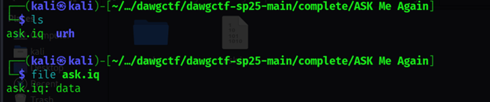
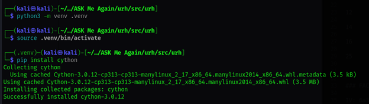

ASK Me Again (MISC)
This challenge deals with signals and modulation techniques, specifically Amplitude-Shift Keying (ASK) as hinted by the title. The challenge provides a .wav file that needs to be analyzed to recover the hidden data.
Understanding ASK Modulation
Amplitude-Shift Keying (ASK) is a form of amplitude modulation that represents digital data as variations in the amplitude of a carrier wave. In its simplest form, the presence of a carrier wave at a certain amplitude represents a binary "1", while its absence (or a lower amplitude) represents a binary "0".
In ASK, the carrier signal's amplitude changes to represent different binary values. This is commonly used in short-range wireless communications and can be demodulated with relatively simple techniques.
Analyzing the Signal
To analyze the provided .wav file, I used GNU Radio Companion, a graphical tool for creating signal processing applications. I built a simple flowgraph to demodulate the ASK signal and extract the binary data.
The key components of the flowgraph included:
- A file source to read the .wav file
- A low-pass filter to remove noise
- An AM demodulator to extract the amplitude variations
- A threshold detector to convert the analog signal to digital (binary)
- A Binary Slicer to clean up the digital signal
- A file sink to save the demodulated bits
After running the flowgraph, I converted the resulting bit stream to ASCII characters to reveal the flag.